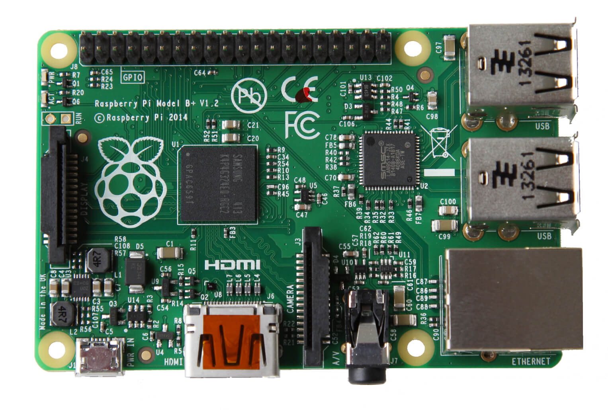
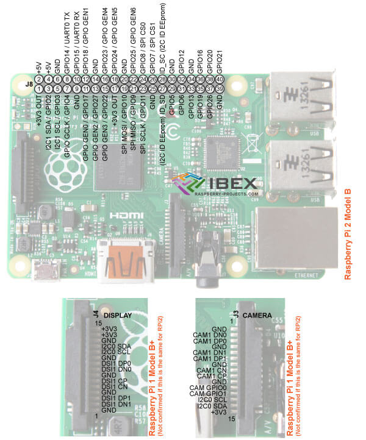

A friend and I made a RPI pirate radio by using variboard to create our very own receiver and transmiters that only could communiate with our transcription. I created the program sued to type messages and then encrypt them sending them over a radio wave a super speed that only our very own receiver could understand. Also we beamed music and binary over our tansmiter to ahand held radio.
Raspberry Pi
circuits.io
Notes: We can really just use any input(Phone, Computer, Rpi) with the transmitter because the signal in is just regular audio out, sine waves. We would just use a 9 volt battery to power it. If you want to we can use the RPi to make a compact transmitter and receiver.
Project Summary:
Brenden Brusberg will do the coding end of the project and Samuel Roscoe will perform all hardware design and creation. We will help eachother out(because we are pals). We shall have pirate illegal radio station(Shhh). Using FM radio frequencies in a small area(Room Sized) to transmit encoded(Maybe some encrypted) text, links, pictures to a receiving Raspberry pi. Secret Walkie Talkies because only other Raspberry Pies with the encryption code can receive the transmission properly.
Project Objectives:
Learning Objectives:
Coding Objectives:
Learning Links:
https://www.raspberrypi.org/documentation/configuration/audio-config.md
https://www.raspberrypi.org/documentation/usage/audio/
Understanding how FM Radio works:
How radio receiver works
Project log:
First working prototype:
Transmits signal on carrier wave, lacks definition and range.
Suspected that better antenna needed
Signal need to be modulated up to increase range and decrease interference
New antenna attached, achieved very specific frequency.
If we use a multimeter and the equation for frequency, we do not need an oscilloscope
f = 1/(2*pi*sqrt(L*C))
L=.1mH
And C is between 4 and 40 pF and using a multimeter we can find the the current frequency
BRENDEN!!!!!
https://www.raspberrypi.org/learning/morse-code-virtual-radio/worksheet/
I made all the Pseudo code for it so just need to plug it in
So basically we just need to see if the receiver will send a high enough frequency to the pin to count as input
http://electronics.stackexchange.com/questions/163253/sine-wave-to-square-wave-schmitt-trigger
Clean CSS files are essential for an optimized website. Free online tool by HTML Cleaner.